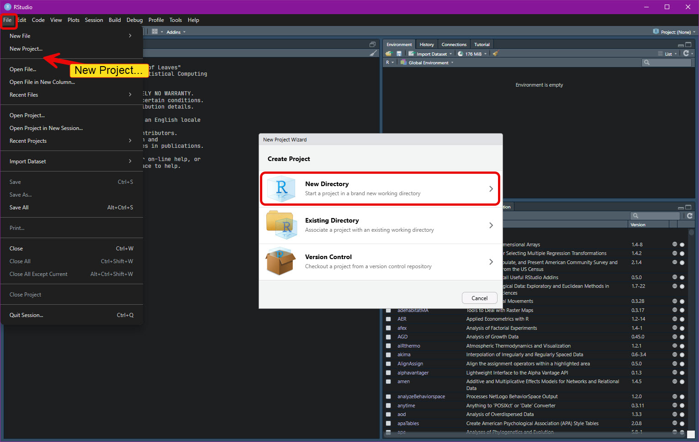
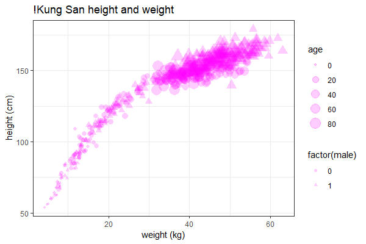

Review of R and RStudio
EES 4891-06/5891-01
Bayesian Statistical Methods
Jonathan Magnolia Gilligan
Class #4: Wednesday, January 14 2026
Overview of Rstudio
RStudio Window layout
- Project oriented
- A project is a directory with a group of related files (R, data, etc.)
- A project can be managed with
gitfor revision control - Create a new project:
- Create a new directory for a project
- Create a project in an existing directory
- Download a project from GitHub or another external source, using
git
- Online help and cheat-sheets
- Window layout
- Four panes:
- Editor pane (edit R scripts, text files, etc.)
- Console and Terminal pane (interactively run R commands, etc.)
- Files, Plots, Packages, Help, etc.
- You can export plots to the clipboard or files.
- Environment, History, Git, etc.
- Four panes:

Creating an RStudio Project

Creating an RStudio Project

R Language
R Language
- R is flexible
- Two approaches
- Base R
- Very flexible and powerful
- Sometimes confusing and verbose
- Nothing special about data frames (
data.frame)
- Tidyverse (
library(tidyverse))- Unified philosophy of data analysis
- Canonical reference: R for Data Science
- Oriented toward
data.frames (andtibbles) - Principles of “Tidy Data”
- Consistent approach makes it easy to figure out how to do what you want to do.
- Download extensive cheat-sheets via RStudio help menu.
- Unified philosophy of data analysis
- Base R
Working with Data
- R data types:
-
integer,numeric(real),character,logical,factor, …
-
- R data structures:
- 1-dim:
vector,list - 2-dim:
matrix,data.frame, … -
n-dim:
array - Data types:
-
vector,array,matrix: elements must be the same type -
list: elements can be different types
-
data.frame,tibble:- Like a spreadsheet or database table.
- A
listofvectors: - Each column is a
vectorrepresenting a variable:- height, weight, …
- Each column can be a different type.
- Each row is a set of related measurements for a given person (height, weight, …).
- A
- Like a spreadsheet or database table.
- 1-dim:
- Anthropometric data: !Kung San people
library(tidyverse)
library(tidybayes)
library(rethinking)
library(tidybayes.rethinking)
data(Howell1)
d <- tibble(Howell1)
head(d)## # A tibble: 6 × 4
## height weight age male
## <dbl> <dbl> <dbl> <int>
## 1 152. 47.8 63 1
## 2 140. 36.5 63 0
## 3 137. 31.9 65 0
## 4 157. 53.0 41 1
## 5 145. 41.3 51 0
## 6 164. 63.0 35 1## mean sd 5.5% 94.5%
## height 138.2635963 27.6024476 81.108550 165.73500
## weight 35.6106176 14.7191782 9.360721 54.50289
## age 29.3443934 20.7468882 1.000000 66.13500
## male 0.4724265 0.4996986 0.000000 1.00000
## histogram
## height ▁▁▁▁▁▁▁▂▁▇▇▅▁
## weight ▁▂▃▂▂▂▂▅▇▇▃▂▁
## age ▇▅▅▃▅▂▂▁▁
## male ▇▁▁▁▁▁▁▁▁▇Data Structures
Data Structures
-
Data is represented as a
data.frame, or a special kind of data frame called atibble(for “Tidy Table”)- A
data.frameis like a spreadsheet. - Each column represents a different variable (year, month, temperature, rainfall, humidity, etc.)
- Each row represents a different measurement of all the variables.
- A

- Columns can be different data types (integer, numeric, character, logical, factor, …)
- All rows of a column are the same type
Data
- Base R
- Separate 1-dimensional lists or vectors of data
- 2D (or higher) arrays:
data.frame,matrix,array - Index rows and columns:
- Indexing starts at 1
- Like Matlab, unlike Python, which starts at 0
-
Howell1[107,]for all columns of the row -
Howell1[,"height"]for all rows of the “height” column -
Howell1[10:15, c(1, 3, 4)]to get rows 10–15 of columns 1, 3, and 4. Howell1["age" >= 18, c("height", "weight")]
- Indexing starts at 1
- Tidyverse (
library(tidyverse))data.frameortibble-
Select columns:
select(Howell1, height, weight, age) select(Howell1, -male, -age)-
Select all columns that start with “
foo_” but don’t end with “bar”select(my_data, starts_with("foo_"), -ends_with("bar"))
-
-
Select rows:
filter(Howell1, age >= 18, male)
Graphics
- Base R
-
plotcommand
-
- Tidyverse
-
ggplotcommandggplot(Howell1, aes(x = weight, y = height)) + geom_point() + labs(x = "weight (kg)", y = "height (cm)", title = "!Kung San height and weight")ggplot(Howell1, aes(x = weight, y = height)) + geom_point(aes(shape = factor(male), size = age), color = "magenta", alpha=0.2) + labs(x = "weight (kg)", y = "height (cm)", title = "!Kung San height and weight") + theme_bw()
-
Grammar of Graphics
Grammar of Graphics
- The heart of data visualization in the Tidyverse is the
ggplot2package.-
ggfrom Leland Wilkinson, The Grammar of Graphics
-
- A graph has a grammar, which can be expressed in terms of 7 layers
- Data
- Geometries: How to draw the data (Lines, points, etc.)
- Aesthetics: How to mapping different dimensions of the data to visual attributes (x & y coordinates, colors, shape, etc.)
Statistical transformations: histograms, smoothing, box-plots, etc.
-
Position adjustments: e.g., side-by-side versus stacked bar charts

Coordinate systems: Cartesian vs. polar, pie charts, etc.
Facets: Breaking a graph into sub-plots.

Grammar of Graphics in R
-
To start a graph, specify the data and aesthetics:
-
Next, we add geometries
alphamakes the points semi-transparent -
Label coordinates
Jura Data Set
Jura Data Set
- Survey of soil contamination in the Swiss Jura
- O. Attela, J.-P. Dubois, & R. Webster. 1994. Environ. Pollution 86, 315.
- The data set contains measurements of cadmium, cobalt, chromium, copper, nickel, lead, and zinc concentrations from 100 soil samples.
## # A tibble: 6 × 11
## long lat Landuse Rock Cd Co Cr Cu Ni Pb Zn
## <dbl> <dbl> <fct> <fct> <dbl> <dbl> <dbl> <dbl> <dbl> <dbl> <dbl>
## 1 6.85 47.1 Meadow Quaternary 1.57 8.28 37.1 18.6 18.6 38.2 65.2
## 2 6.87 47.2 Meadow Argovian 2.04 10.8 40.8 11.5 21.5 33.4 113.
## 3 6.87 47.2 Pasture Argovian 1.20 12 53.2 13.0 23.9 26.6 91.6
## 4 6.86 47.1 Pasture Quaternary 0.49 10.9 23.4 5.64 14.6 25.9 41.2
## 5 6.84 47.1 Meadow Sequanian 0.692 8.12 27.2 10.3 14.6 31.2 50.4
## 6 6.87 47.1 Forest Kimmeridgian 1.75 9.12 35.5 8.36 26.4 37.7 63.2## Rows: 100
## Columns: 11
## $ long <dbl> 6.854080, 6.865951, 6.871425, 6.857691, 6.837664, 6.871310, 6.…
## $ lat <dbl> 47.14342, 47.15144, 47.15390, 47.13966, 47.13603, 47.13773, 47…
## $ Landuse <fct> Meadow, Meadow, Pasture, Pasture, Meadow, Forest, Forest, Past…
## $ Rock <fct> Quaternary, Argovian, Argovian, Quaternary, Sequanian, Kimmeri…
## $ Cd <dbl> 1.570, 2.045, 1.203, 0.490, 0.692, 1.750, 0.415, 0.685, 0.920,…
## $ Co <dbl> 8.280, 10.800, 12.000, 10.920, 8.120, 9.120, 9.120, 11.720, 10…
## $ Cr <dbl> 37.12, 40.80, 53.20, 23.40, 27.16, 35.48, 30.32, 31.92, 49.04,…
## $ Cu <dbl> 18.600, 11.480, 13.040, 5.640, 10.320, 8.360, 4.440, 10.920, 3…
## $ Ni <dbl> 18.60, 21.52, 23.92, 14.60, 14.64, 26.40, 24.24, 13.12, 31.52,…
## $ Pb <dbl> 38.20, 33.36, 26.56, 25.88, 31.16, 37.72, 41.00, 30.84, 68.12,…
## $ Zn <dbl> 65.20, 112.80, 91.60, 41.20, 50.40, 63.20, 53.16, 49.28, 102.7…Transforming Rows
Transforming Rows
-
Selecting:
## # A tibble: 6 × 11 ## long lat Landuse Rock Cd Co Cr Cu Ni Pb Zn ## <dbl> <dbl> <fct> <fct> <dbl> <dbl> <dbl> <dbl> <dbl> <dbl> <dbl> ## 1 6.85 47.1 Meadow Quaternary 1.57 8.28 37.1 18.6 18.6 38.2 65.2 ## 2 6.87 47.2 Meadow Argovian 2.04 10.8 40.8 11.5 21.5 33.4 113. ## 3 6.84 47.1 Meadow Sequanian 0.692 8.12 27.2 10.3 14.6 31.2 50.4 ## 4 6.85 47.1 Meadow Kimmeridgian 0.92 10.6 49.0 30.3 31.5 68.1 103. ## 5 6.85 47.1 Meadow Argovian 0.495 8.52 31.4 17.1 16.1 46.8 57.6 ## 6 6.84 47.1 Meadow Sequanian 1.19 9.68 37.4 31.4 22.4 72.4 108. -
Sorting:
## # A tibble: 6 × 11 ## long lat Landuse Rock Cd Co Cr Cu Ni Pb Zn ## <dbl> <dbl> <fct> <fct> <dbl> <dbl> <dbl> <dbl> <dbl> <dbl> <dbl> ## 1 6.83 47.1 Meadow Argovian 0.475 3.96 22.2 22.7 7.92 55.2 46.8 ## 2 6.84 47.1 Meadow Argovian 3.78 9.68 42.8 32.8 23.5 94.4 175. ## 3 6.84 47.1 Meadow Argovian 0.585 5.8 39.9 15.2 13.2 56.4 51.2 ## 4 6.84 47.1 Meadow Argovian 0.57 4.08 24.9 21.4 9.68 67.2 56.8 ## 5 6.84 47.1 Meadow Argovian 0.545 4.24 21.8 33.1 8.88 58 47.2 ## 6 6.84 47.1 Meadow Argovian 0.5 4.8 23.1 16.7 9.36 39.8 46.4
Transforming Rows
-
Selecting on multiple criteria:
## # A tibble: 5 × 11 ## long lat Landuse Rock Cd Co Cr Cu Ni Pb Zn ## <dbl> <dbl> <fct> <fct> <dbl> <dbl> <dbl> <dbl> <dbl> <dbl> <dbl> ## 1 6.85 47.1 Meadow Quaternary 1.57 8.28 37.1 18.6 18.6 38.2 65.2 ## 2 6.86 47.2 Meadow Quaternary 1.58 5.8 40.4 56.4 22.5 93.6 109. ## 3 6.88 47.1 Meadow Quaternary 1.42 11.1 27.5 18.8 20.6 36.5 63.2 ## 4 6.86 47.1 Meadow Quaternary 2.08 13.2 45.9 39 26.4 52.4 104 ## 5 6.88 47.1 Meadow Quaternary 2.61 20.6 37.2 24 29.4 47.2 86.4
Transforming Columns
Transforming Columns
## # A tibble: 6 × 13
## longitude latitude Landuse Rock Cd Co Cr Cu Ni Pb Zn CuNi PbZn
## <dbl> <dbl> <fct> <fct> <dbl> <dbl> <dbl> <dbl> <dbl> <dbl> <dbl> <dbl> <dbl>
## 1 6.85 47.1 Meadow Quaternary 1.57 8.28 37.1 18.6 18.6 38.2 65.2 1 0.586
## 2 6.87 47.2 Meadow Argovian 2.04 10.8 40.8 11.5 21.5 33.4 113. 0.533 0.296
## 3 6.87 47.2 Pasture Argovian 1.20 12 53.2 13.0 23.9 26.6 91.6 0.545 0.290
## 4 6.86 47.1 Pasture Quaternary 0.49 10.9 23.4 5.64 14.6 25.9 41.2 0.386 0.628
## 5 6.84 47.1 Meadow Sequanian 0.692 8.12 27.2 10.3 14.6 31.2 50.4 0.705 0.618
## 6 6.87 47.1 Forest Kimmeridgian 1.75 9.12 35.5 8.36 26.4 37.7 63.2 0.317 0.597 mutate(jura, CuNi = Cu / Ni, PbZn = Pb/Zn) |>
rename(longitude = long, latitude = lat) |>
relocate(CuNi:PbZn, .before = Cd) |>
head()## # A tibble: 6 × 13
## longitude latitude Landuse Rock CuNi PbZn Cd Co Cr Cu Ni Pb Zn
## <dbl> <dbl> <fct> <fct> <dbl> <dbl> <dbl> <dbl> <dbl> <dbl> <dbl> <dbl> <dbl>
## 1 6.85 47.1 Meadow Quaternary 1 0.586 1.57 8.28 37.1 18.6 18.6 38.2 65.2
## 2 6.87 47.2 Meadow Argovian 0.533 0.296 2.04 10.8 40.8 11.5 21.5 33.4 113.
## 3 6.87 47.2 Pasture Argovian 0.545 0.290 1.20 12 53.2 13.0 23.9 26.6 91.6
## 4 6.86 47.1 Pasture Quaternary 0.386 0.628 0.49 10.9 23.4 5.64 14.6 25.9 41.2
## 5 6.84 47.1 Meadow Sequanian 0.705 0.618 0.692 8.12 27.2 10.3 14.6 31.2 50.4
## 6 6.87 47.1 Forest Kimmeridgian 0.317 0.597 1.75 9.12 35.5 8.36 26.4 37.7 63.2Pipes
Pipes
The pipe
%>%or|>sends the output from one function into another.-
This code is hard to read:
-
This code is much easier to read
Summarizing and Grouping
Summarizing and Grouping
-
Average lead content:
-
Grouped Summaries:
jura |> group_by(Landuse, Rock) |> summarize(mean_Pb = mean(Pb), sd_Pb = sd(Pb), count = n()) |> ungroup()## # A tibble: 15 × 5 ## Landuse Rock mean_Pb sd_Pb count ## <fct> <fct> <dbl> <dbl> <int> ## 1 Forest Argovian 33.9 3.21 4 ## 2 Forest Kimmeridgian 53.6 15.3 10 ## 3 Forest Sequanian 57.9 13.4 2 ## 4 Forest Portlandian 42.0 9.56 2 ## 5 Pasture Argovian 28.5 11.4 4 ## 6 Pasture Kimmeridgian 60.9 69.4 14 ## 7 Pasture Sequanian 42.1 11.5 6 ## 8 Pasture Quaternary 37.1 15.9 2 ## 9 Meadow Argovian 53.1 25.3 14 ## 10 Meadow Kimmeridgian 50.1 11.9 13 ## 11 Meadow Sequanian 73.1 54.1 18 ## 12 Meadow Portlandian 109. NA 1 ## 13 Meadow Quaternary 60.8 41.5 7 ## 14 Tillage Argovian 153. NA 1 ## 15 Tillage Kimmeridgian 42.3 5.77 2
More Grouping
-
Counting combinations:
## # A tibble: 15 × 3 ## Landuse Rock n ## <fct> <fct> <int> ## 1 Forest Argovian 4 ## 2 Forest Kimmeridgian 10 ## 3 Forest Sequanian 2 ## 4 Forest Portlandian 2 ## 5 Pasture Argovian 4 ## 6 Pasture Kimmeridgian 14 ## 7 Pasture Sequanian 6 ## 8 Pasture Quaternary 2 ## 9 Meadow Argovian 14 ## 10 Meadow Kimmeridgian 13 ## 11 Meadow Sequanian 18 ## 12 Meadow Portlandian 1 ## 13 Meadow Quaternary 7 ## 14 Tillage Argovian 1 ## 15 Tillage Kimmeridgian 2
-
Alternate Grouping:
## # A tibble: 15 × 5 ## Landuse Rock mean_Pb sd_Pb count ## <fct> <fct> <dbl> <dbl> <int> ## 1 Meadow Quaternary 60.8 41.5 7 ## 2 Meadow Argovian 53.1 25.3 14 ## 3 Pasture Argovian 28.5 11.4 4 ## 4 Pasture Quaternary 37.1 15.9 2 ## 5 Meadow Sequanian 73.1 54.1 18 ## 6 Forest Kimmeridgian 53.6 15.3 10 ## 7 Pasture Sequanian 42.1 11.5 6 ## 8 Meadow Kimmeridgian 50.1 11.9 13 ## 9 Pasture Kimmeridgian 60.9 69.4 14 ## 10 Forest Portlandian 42.0 9.56 2 ## 11 Forest Argovian 33.9 3.21 4 ## 12 Meadow Portlandian 109. NA 1 ## 13 Tillage Kimmeridgian 42.3 5.77 2 ## 14 Forest Sequanian 57.9 13.4 2 ## 15 Tillage Argovian 153. NA 1
Slicing
-
Selecting:
## # A tibble: 15 × 11 ## # Groups: Landuse, Rock [15] ## long lat Landuse Rock Cd Co Cr Cu Ni Pb Zn ## <dbl> <dbl> <fct> <fct> <dbl> <dbl> <dbl> <dbl> <dbl> <dbl> <dbl> ## 1 6.86 47.2 Forest Argovian 1.32 3.74 27.6 5.4 14.4 37.5 46.4 ## 2 6.86 47.1 Forest Kimmeridgian 1.25 8.08 39.6 13.1 18.6 88 86.8 ## 3 6.85 47.1 Forest Sequanian 1.01 9.96 28.7 5.96 17.4 67.4 52.5 ## 4 6.87 47.1 Forest Portlandian 1.22 5.24 27.0 5.52 21.0 48.8 46.4 ## 5 6.85 47.1 Pasture Argovian 0.375 12.0 34.1 19.4 16.4 45.2 70 ## 6 6.86 47.1 Pasture Kimmeridgian 1.76 10.3 40.5 127 30.8 300 192 ## 7 6.83 47.1 Pasture Sequanian 2.54 12.6 70 8.72 26.2 55.6 71.6 ## 8 6.88 47.1 Pasture Quaternary 1.31 12.7 34.8 17.7 19.6 48.4 80.4 ## 9 6.85 47.1 Meadow Argovian 0.394 4.44 21.6 39.6 8.92 106. 72.4 ## 10 6.85 47.1 Meadow Kimmeridgian 0.825 15.3 36.5 31.2 25.4 70.4 75.4 ## 11 6.86 47.1 Meadow Sequanian 1.78 11.4 41 155. 24.5 240. 260. ## 12 6.88 47.1 Meadow Portlandian 1.62 12.0 34.6 91.2 30.2 109. 157. ## 13 6.85 47.1 Meadow Quaternary 0.75 15.6 29.8 73.1 20.2 139. 95.7 ## 14 6.85 47.1 Tillage Argovian 1.31 8.44 41.6 118. 20.4 153. 145. ## 15 6.87 47.1 Tillage Kimmeridgian 1.93 13.8 45 19.3 35.7 46.4 90
-
Random Sampling
## # A tibble: 5 × 11 ## long lat Landuse Rock Cd Co Cr Cu Ni Pb Zn ## <dbl> <dbl> <fct> <fct> <dbl> <dbl> <dbl> <dbl> <dbl> <dbl> <dbl> ## 1 6.83 47.1 Meadow Argovian 0.475 3.96 22.2 22.7 7.92 55.2 46.8 ## 2 6.84 47.1 Meadow Argovian 3.78 9.68 42.8 32.8 23.5 94.4 175. ## 3 6.86 47.1 Meadow Argovian 0.745 3.95 26.6 8.52 15.4 30.3 52.4 ## 4 6.86 47.1 Meadow Kimmeridgian 1.68 14.4 46.3 22.9 43.7 61.4 111. ## 5 6.85 47.1 Meadow Quaternary 1.57 8.28 37.1 18.6 18.6 38.2 65.2
Sampling from models
-
Base R
library(rethinking) data(Howell1) adults <- filter(Howell1, age >= 18) mdl <- quap(alist( height ~ dnorm(mu, sigma), mu <- a + b * weight, a ~ dnorm(178,20), b ~ dlnorm(0,1), sigma ~ dunif(0,50) ), data = adults) w_lst <- data.frame(weight = seq(30, 70, by = 5))-
Sample from the posterior predictive distribution for data (e.g.,
height):extract.samples(mdl, 1000) -
Sample from the posterior of the model link (
mu):link(mdl, w_lst)
-
-
Tidyverse (
library(tidyverse))library(tidybayes) library(tidybayes.rethinking)-
Sample from the posterior predictive distribution for data (e.g.,
height):predicted_draws(mdl, w_lst, ndraws = 1000, value = "height") add_predicted_draws(w_lst, mdl, ndraws = 1000, value = "height") -
Sample from the posterior of the model link (
mu):linpred_draws(mdl, w_lst, ndraws = 1000, value = "height") add_linpred_draws(w_lst, mdl, ndraws = 1000, value = "height")
-
add_versions are the same, but reverse the order of the first two arguments (model object and new data).